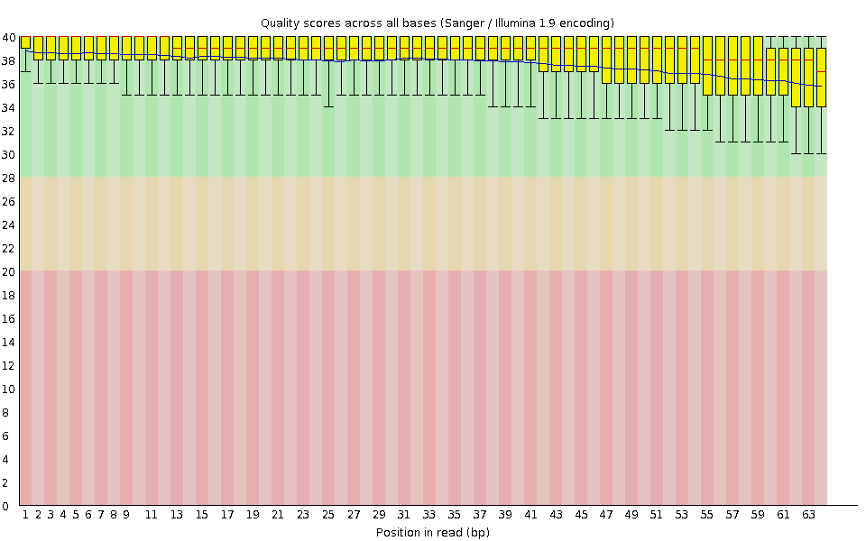
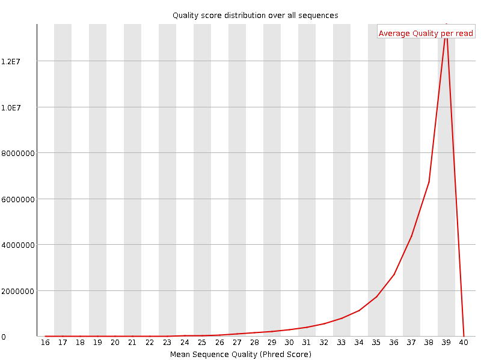
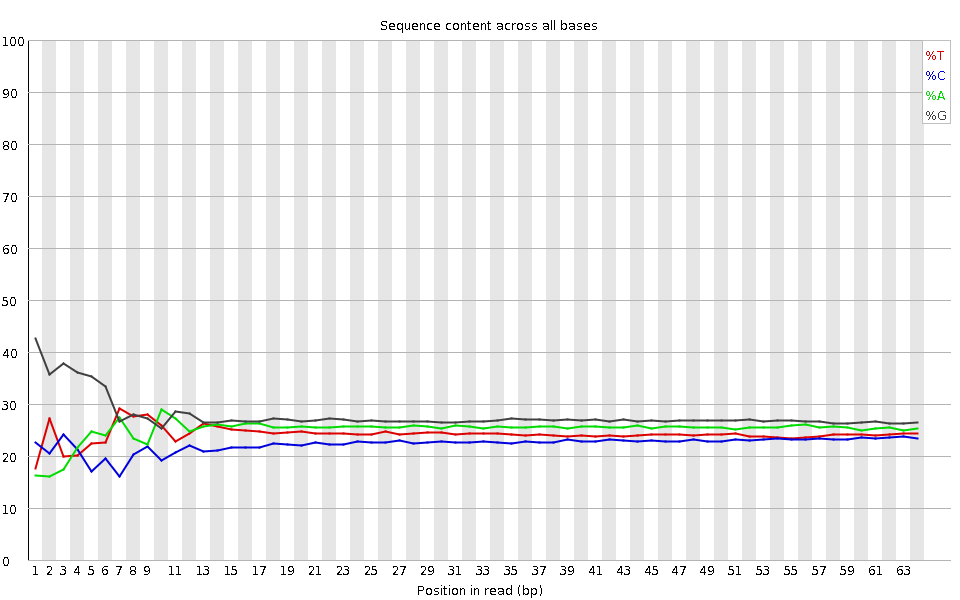
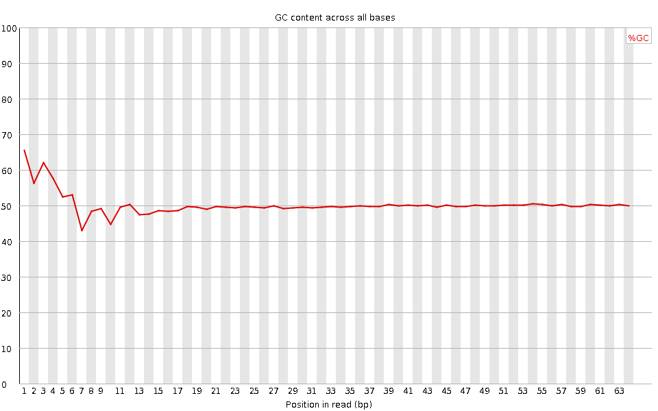
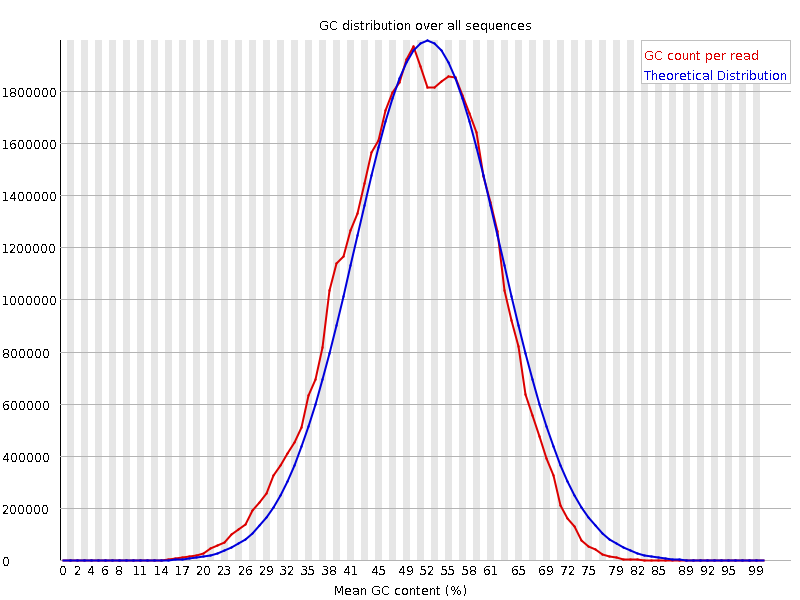
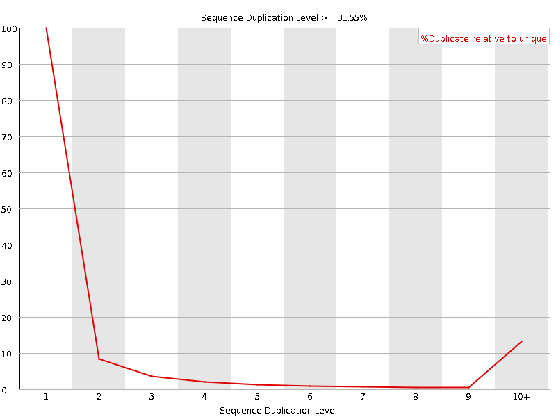
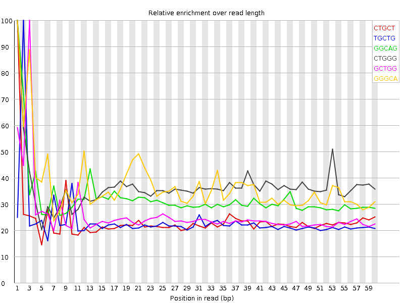

![[OK]](Icons/tick.png) Basic Statistics
Basic Statistics
| Measure | Value |
|---|---|
| Filename | SRR307911_pe_1.f.fastq |
| File type | Conventional base calls |
| Encoding | Sanger / Illumina 1.9 |
| Total Sequences | 32976614 |
| Filtered Sequences | 0 |
| Sequence length | 64 |
| %GC | 50 |
Per base sequence quality

Per sequence quality scores

![[FAIL]](Icons/error.png) Per base sequence content
Per base sequence content

Per base GC content

Per sequence GC content

Per base N content

Sequence Length Distribution

![[WARN]](Icons/warning.png) Sequence Duplication Levels
Sequence Duplication Levels

Overrepresented sequences
| Sequence | Count | Percentage | Possible Source |
|---|---|---|---|
| GTGTGTACAAAGGGCAGGGACTTAATCAACGCAAGCTTATGACCCGCACTTACTGGGAATTCCT | 33784 | 0.10244835931305743 | No Hit |
Kmer Content

| Sequence | Count | Obs/Exp Overall | Obs/Exp Max | Max Obs/Exp Position |
|---|---|---|---|---|
| CTGCT | 4102850 | 2.4749868 | 10.432061 | 1 |
| TGCTG | 4408575 | 2.1434324 | 9.137327 | 2 |
| GGCAG | 4992520 | 2.0462267 | 6.306001 | 1 |
| CTGGG | 4765435 | 2.0233593 | 5.5186176 | 1 |
| GCTGG | 4669365 | 1.9825689 | 7.6332064 | 3 |
| GGGCA | 4637895 | 1.9008807 | 5.1320024 | 1 |
| TGGCA | 3820985 | 1.7932892 | 7.315719 | 5 |
| CTGGC | 3361065 | 1.7706109 | 8.155663 | 4 |
| GGCAC | 3171120 | 1.612584 | 7.6739006 | 6 |
| TGGGG | 4653445 | 1.592463 | 5.340247 | 2 |
| GGGAG | 4779860 | 1.5789682 | 5.200243 | 1 |
| GTGGG | 4483435 | 1.5342835 | 7.8705945 | 1 |
| GGGGA | 4560235 | 1.5064178 | 6.083731 | 1 |
| TGTGT | 3061630 | 1.3738191 | 5.9925857 | 2 |
| GGGGG | 4520980 | 1.3510964 | 5.2900095 | 1 |
| GTGTG | 3271945 | 1.2821587 | 6.377828 | 1 |
| TACAA | 2106645 | 1.2080233 | 6.7363663 | 6 |
| CGGGG | 2987330 | 1.1076757 | 6.117054 | 1 |
| GTGTA | 2206400 | 0.9557065 | 5.5628405 | 3 |
| GTACA | 1792315 | 0.9298092 | 6.2556553 | 5 |
| TGTAC | 1664800 | 0.8947014 | 6.3113856 | 4 |